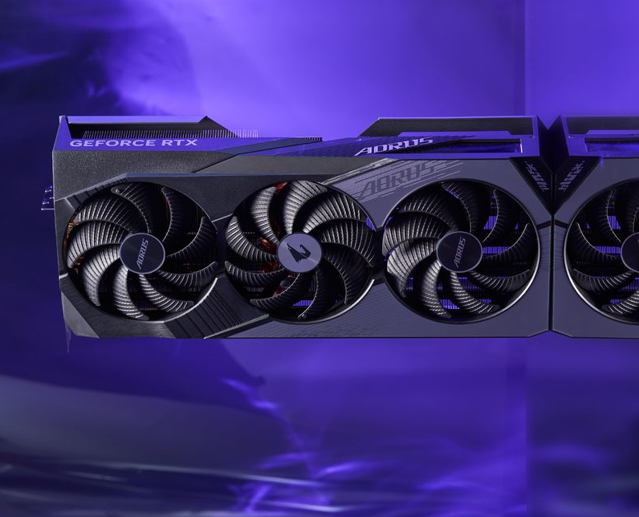

Placa de Vídeo GeForce RTX 4070
A NVIDIA GeForce RTX 4070, com a arquitetura Ada Lovelace, oferece gráficos incríveis com ray tracing rápido e desempenho turbinado por IA com DLSS 3. Ideal para jogos e criação de conteúdo, ela combina potência com estilo. A série MSI GAMING traz o sistema de refrigeração TRI FROZR 3, garantindo desempenho estável mesmo em uso intenso. Seu design estilizado com iluminação colorida representa o espírito gamer e atrai desde jogadores casuais até streamers e competidores de eSports. O sistema de ventilação TORX FAN 5.0 melhora o fluxo de ar em 23%, com pás conectadas em anéis inclinados a 22° para otimizar a refrigeração mesmo em baixas rotações.